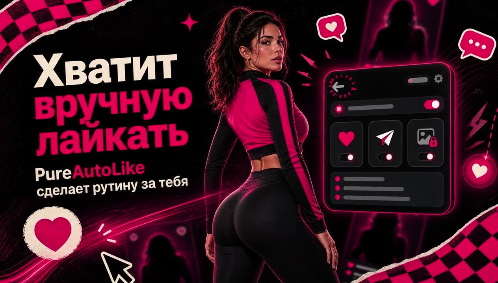

Автолайкер Pure
Кликает видимые лайки в открытой вкладке Pure Web и не обрабатывает повторно одну и ту же видимую анкету в текущей сессии.
Бесплатная beta 2026 для Pure Web
PureAutoLike - бесплатная beta Chrome-расширения для Pure Web в 2026: рабочий автолайк видимых анкет, доступные фото, Telegram-уведомления, таймеры и локальный Markdown-экспорт без отдельного desktop-бота.

Что делает
Кликает видимые лайки в открытой вкладке Pure Web и не обрабатывает повторно одну и ту же видимую анкету в текущей сессии.
Добавляет кнопку для плейсхолдеров фото Pure, если текущая веб-сессия уже имеет доступ к этим фотографиям.
По желанию отправляет уведомления о новых матчах, лайках и сообщениях после ввода bot token и chat id.
Локально сохраняет видимый статус, возраст и описание анкет только при включенном режиме сбора, затем экспортирует вручную.
Поисковый интент